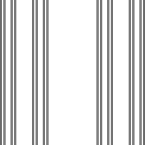
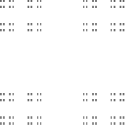

|  |
| The Cantor set and line segment example suggests a plausible relation is |
| db(A × B) = db(A) + db(B) |
| Here A × B denotes the Cartesian product of A and B. Most simply, |
| A × B = {(a, b): a belongs to A and b belongs to B} |
| For example, if A is a Cantor set that lies in a line, and B is a line segment
that lies in a line, then |
| Here is a sketch of the proof in a simple case. |
| Suppose NA(r) is the number of boxes (line segments in this example) needed to cover A, and NB(r) is the number of boxes (line segments again) needed to cover B. |
| To cover A × B, form boxes made from the boxes covering A and the boxes covering B. In the
example,
we form squares from the product of two line segments, one in the |
| Then NA × B(r) = NA(r)⋅NB(r) and so |
| Consequently, |
| Taking the limit as r → 0 gives |
| db(A × B) = db(A) + db(B) |
| We have made simplifying assumptions here, for example, that the same scaling factor r works for both A and B. |
| In the most general case, the best result is |
| dim(A × B) ≥ dim(A) + dim(B) |
| Here dim refers to the Hausdorff dimension, more mathematically demanding but equal to ds for exactly self-similar shapes. See chapter 7 of Falconer. |
| The addition formula does hold for regular Cantor sets (for example, consisting of |
| For example, the product of Cantor sets of dimension |
|  |
Return to the algebra of dimensions.